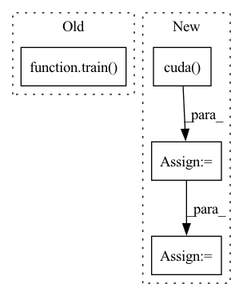

Pattern ID :13381

Before Change
adjust_learning_rate(optimizer, epoch, args)
// train for one epoch
train(train_loader, model, criterion, optimizer, epoch, local_rank, args)
// evaluate on validation set
acc1 = validate(val_loader, model, criterion, local_rank, args)
After Change
for step, (images, labels) in enumerate(train_loader):
// 将对应进程的数据放到对应 GPU 上
images = images.cuda(local_rank, non_blocking=True)
labels = labels.cuda(local_rank, non_blocking=True)
outputs = model(images)
loss = criterion(outputs, labels)
// torch.distributed.barrier()的作用是，阻塞进程，保证每个进程运行完这一行代码之前的所有代码，才能继续执行，这样才计算平均loss和平均acc的时候不会出现因为进程执行速度不一致的错误
torch.distributed.barrier()
reduced_loss = reduce_mean(loss, args.nprocs)
// 更新优化模型权重
optimizer.zero_grad()
In pattern: SUPERPATTERN
Frequency: 3
Non-data size: 4
Instances
Fragment ID: 45138513
Project Name: rentainhe/pytorch-distributed-training
Commit Name: 924a65892510a4cf1352ee408d6186344043f3a4
Time: 2021-01-05
Author: 596106517@qq.com
File Name: distributed.py
M Class Name: AnonimousClass
N Class Name: AnonimousClass
M Method Name: main_worker(3)
N Method Name: main_worker(3)
M Parent Class:
N Parent Class:
M File Name: distributed.py
N File Name: distributed.py
M Start Line: 60
M End Line: 111
N Start Line: 41
N End Line: 110
'>
Before Change
print("lr={:.5f}".format(optimizer.param_groups[0]["lr"]))
// train for one epoch
train(train_source_iter, train_target_iter, classifier, optimizer, epoch, iters_per_epoch, domain_adv, args)
// evaluate on validation set
acc1 = validate(val_loader, classifier, args)
After Change
print("=> using pre-trained model "{}"".format(args.arch))
backbone = models.__dict__[args.arch](pretrained=True)
num_classes = train_source_dataset.num_classes
classifier = ImageClassifier(backbone, num_classes).cuda()
classifier_feature_dim = classifier.features_dim
domain_discri = DomainDiscriminator(
in_feature=classifier_feature_dim * num_classes,
hidden_size=1024
).cuda()
all_parameters = classifier.get_parameters() + domain_discri.get_parameters()
classifier = torch.nn.DataParallel(classifier).cuda()
domain_discri = torch.nn.DataParallel(domain_discri).cuda()
// define optimizer and lr scheduler
optimizer = SGD(all_parameters, args.lr, momentum=args.momentum, weight_decay=args.weight_decay, nesterov=True)
lr_sheduler = StepwiseLR(optimizer, init_lr=args.lr, gamma=0.001, decay_rate=0.75)
// define loss function
domain_adv = ConditionalDomainAdversarialLoss(
'>
Fragment ID: 45138515
Project Name: thuml/transfer-learning-library
Commit Name: 540d571d6454ca34ee2687a3fb6a2e63e27be111
Time: 2020-03-16
Author: JiangJunguang1123@outlook.com
File Name: examples/cdan.py
M Class Name: AnonimousClass
N Class Name: AnonimousClass
M Method Name: main(1)
N Method Name: main(1)
M Parent Class:
N Parent Class:
M File Name: examples/cdan.py
N File Name: examples/cdan.py
M Start Line: 48
M End Line: 103
N Start Line: 40
N End Line: 100
'>
Before Change
print("lr={:.5f}".format(optimizer.param_groups[0]["lr"]))
// train for one epoch
train(train_source_iter, train_target_iter, classifier, optimizer, epoch, iters_per_epoch, domain_adv, args)
// evaluate on validation set
acc1 = validate(val_loader, classifier, args)
After Change
print("=> using pre-trained model "{}"".format(args.arch))
backbone = models.__dict__[args.arch](pretrained=True)
num_classes = train_source_dataset.num_classes
classifier = ImageClassifier(backbone, num_classes).cuda()
classifier_feature_dim = classifier.features_dim
domain_discri = DomainDiscriminator(
in_feature=classifier_feature_dim * num_classes,
hidden_size=1024
).cuda()
all_parameters = classifier.get_parameters() + domain_discri.get_parameters()
classifier = torch.nn.DataParallel(classifier).cuda()
domain_discri = torch.nn.DataParallel(domain_discri).cuda()
// define optimizer and lr scheduler
optimizer = SGD(all_parameters, args.lr, momentum=args.momentum, weight_decay=args.weight_decay, nesterov=True)
lr_sheduler = StepwiseLR(optimizer, init_lr=args.lr, gamma=0.001, decay_rate=0.75)
// define loss function
domain_adv = ConditionalDomainAdversarialLoss(
'>
Fragment ID: 45138537
Project Name: thuml/transfer-learning-library
Commit Name: a5d345dfccf4fe0912edb7566476bf26cf0a9ac0
Time: 2020-03-16
Author: JiangJunguang1123@outlook.com
File Name: examples/cdan.py
M Class Name: AnonimousClass
N Class Name: AnonimousClass
M Method Name: main(1)
N Method Name: main(1)
M Parent Class:
N Parent Class:
M File Name: examples/cdan.py
N File Name: examples/cdan.py
M Start Line: 48
M End Line: 103
N Start Line: 40
N End Line: 100